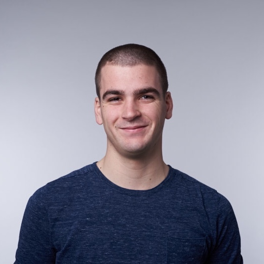

Platinum Sponsors
Gold Sponsor

Silver Sponsor
More info on our fifth sponsor soon.
Location
- Parool Theater
- Wibautstraat 131D
- 1091 GL, Amsterdam
- The Netherlands

Schedule
|
Registration 09:00-10:00 |
Get your badge, grab a coffee & interact. |
|
|
Welcome 10:00-10:15 
|
Jeroen Leenarts |
|
|
Session 10:15-11:00
|
Tom Lokhorst |
|
|
Session 11:00-11:45  |
Bas Broek Our speaker Bas Broek is an interesting one. Co-author of the SwiftWeekly newsletter. Developing iOS apps since 2014. You could have met him at one of the CocoaHeadsNL Meetups, or a try! Swift conference here or there. In this talk Bas will look at how documenting your APIs can help anyone interacting with it have a more pleasant time and smoother experience for every user of your framework (including your future self). All that while writing better, more maintainable code, with fewer bugs and better testability in the process. |
|
|
Session 11:45-12:30 |
ABN AMRO In the mobile department of ABN AMRO we feel the need of frequent releases to quickly react to our customers’ needs. In 2017 we started a journey to accelerate our release cycle without compromising on quality. In this talk we will focus on interesting areas that we believe are slightly less common in the industry and that are part of our ongoing journey. |
|
|
Lunch 12:30-13:15 |
Time to recover, recharge and get ready for the afternoon. |
|
|
Session 13:15-14:00 |
Alexander Griekspoor Agenda is Dutch, made by Alexander Griekspoor, Drew McCormack and Marcello Luppi, three former scientists with a long history of making indie apps. Alex previously made a successful app for researchers called Papers, which he eventually sold to a scientific publisher. Back in 2013 he talked about what made him decide to give up his life as an indie developer at NSConference. In this talk he picks up the story where he previously left off, telling how after a 3 year corporate stint, he felt it was time to start anew and return to something small and more hands-on creative again. How this eventually led to the idea for Agenda app and the bumpy road to his fourth Apple Design Award. |
|
|
Session 14:00-14:45 |
Eduard Ockerse Eduard Ockerse will provide a talk for our platinum sponsor Achmea. Eduard has been an iOS developer for over 4 years, starting as a freelance developer in Málaga for small local companies. The last three years he has worked on various large projects for clients in the financial industry, a telco and Smartify, which has been highlighted by Apple and has won multiple awards. Currently Eduard is spending his time on the Centraal Beheer app. |
|
|
Break 14:45-15:15 |
Almost made it, time for a coffee or a soda. |
|
|
Session 15:15-16:00 
|
Daniel Steinberg Daniel Steinberg has spent the last three decades working as a professional Swift developer. OK, he hasn't. But he's really enjoying the Swift Programming Language. He has written apps for the iPhone and the iPad since the SDKs first appeared and has written programs for the Mac all the way back to System 7. You can find him at Dim Sum Thinking. |
|
|
Session 16:00-16:45 |
David Broza |
|
|
Closing 16:45-17:00
|
Jeroen Leenarts |
|
|
Drinks 17:00-19:00 |
Drinks are on us. But do collect your beverage coins with us. |
University day
Get the most from functional programming in Swift
by Daniel Steinberg
Get the most from functional programming in Swift
by Daniel Steinberg
| In addition to the main DO iOS Conference Day, we’ll host a DO iOS University Day with Daniel Steinberg will explain more about the Patterns of Functional Programming in Swift. There is more to functional programming than map(), filter(), and reduce(). At the end of this day, you'll look at programming in Swift differently. There’s the “how do we use this in real life in real apps with a team that isn’t all-in on functional programming.” What you'll learnIn this one day workshop we will build components that have a functional core. The value types that sit at the center of our examples will have properties that store closures as their only state. We’ll use combinators to give these special objects the power and APIs that object-oriented programmers expect. Our examples will include Sets, Random Number Generators (disguised in a State monad), Parser Combinators (briefly), and Henderson’s Picture Language. We assume that you are an experienced programmer who has spent some time working with Swift. What you needYou need a Mac running an up to date install of MacOS and Xcode. |